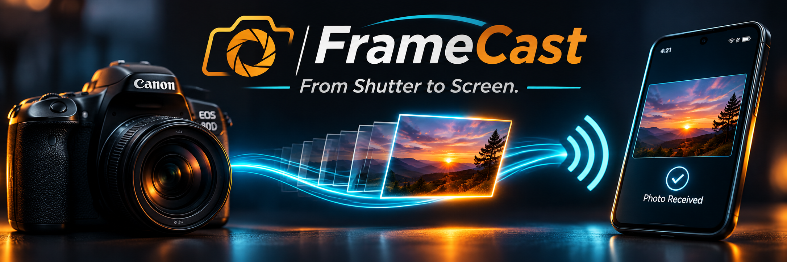

📷 Camera capture
Canon EOS 80D USB JPEG transfer and catch-up scans for new images.

FrameCast is building a faster way to move photographs from the camera to the people waiting to see them. Our first milestone is reliable, offline-first camera transfer. Real-time client delivery is next.
Explore the projectCanon EOS 80D USB JPEG transfer and catch-up scans for new images.
SQLite tracking, duplicate prevention, and USB reconnect recovery.
Non-destructive transfer: originals remain on the camera card.
v0.2.7 tested local transfer engine.
Secure uploads, client galleries, and resilient connectivity.
Android companion and broader camera support.
Photography business workflows and potential HoneyBook integration.